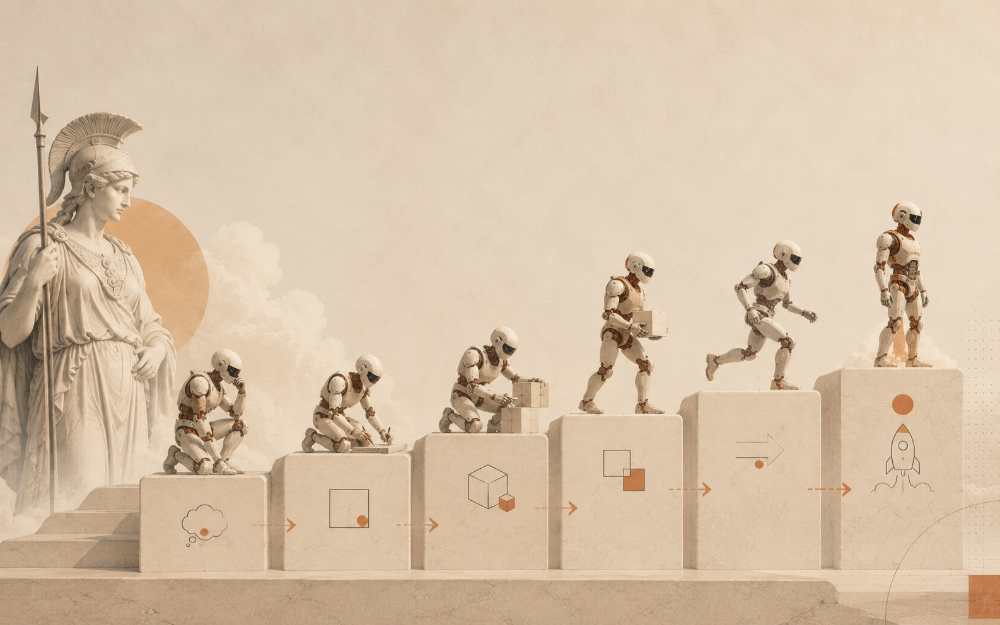
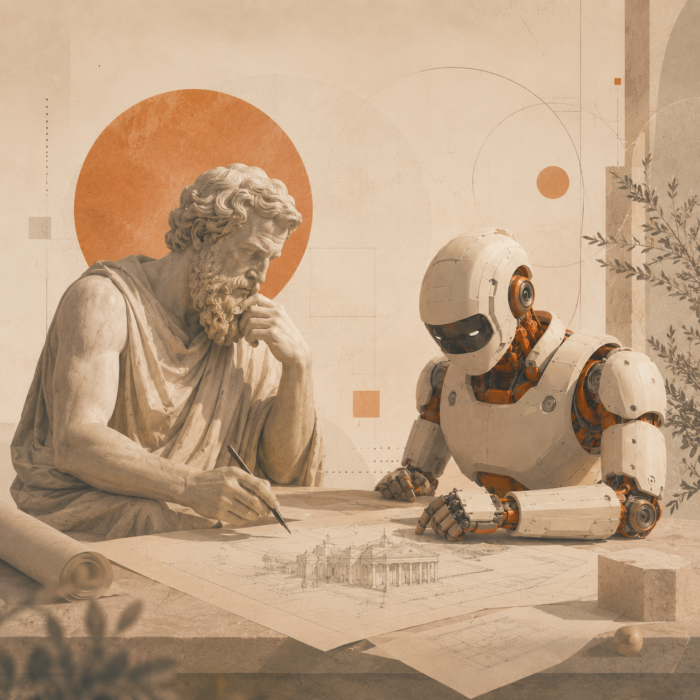
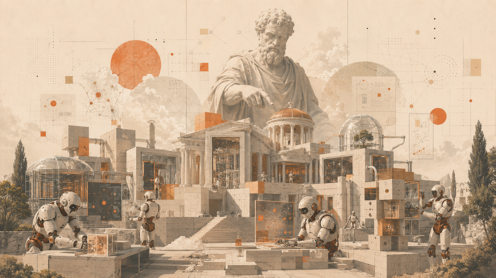
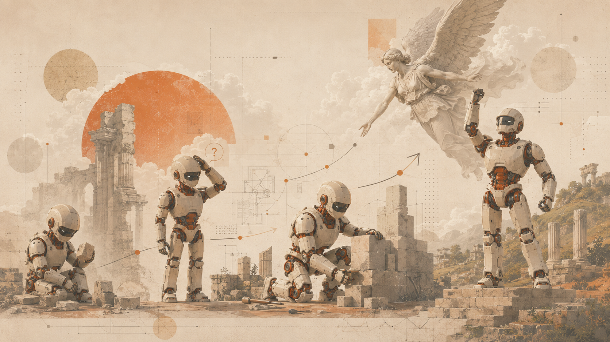
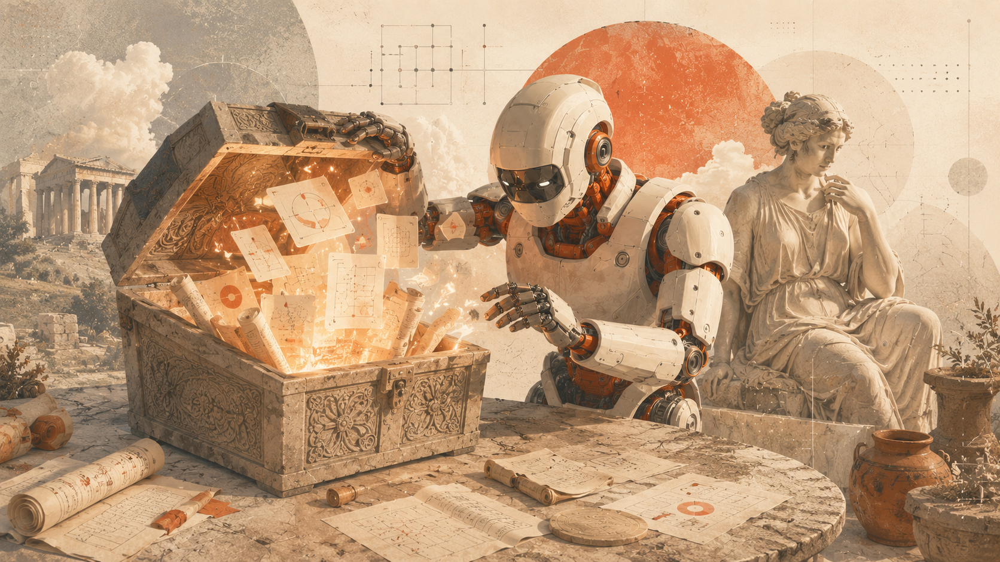

框架 · Framework
VibeFlow —— 让 AI 按工程纪律交付
一个面向 Claude Code 的结构化交付框架。把需求、设计、实现、审查、测试、发布和复盘串成一条可恢复、可追踪的工作流。

近 8 年的工作经历让我积累了丰富的后端开发和架构经验，专注于构建高性能、高并发、高稳定性的云服务系统。最近把更多精力投入到 AI Agent、Workflow 和 Harness 框架 等 AI 工程落地方向的探索。
了解更多关于我 →不堆名词。下面四个方向，是我真正动手做过、踩过坑、也交付过的领域。
单/多 Agent 编排、Context 治理、记忆系统、Skills 扩展，从 L1–L5 分层到 OpenClaw 实践。
服务拆分、网关与通信、容灾与高可用，把复杂系统拆成能独立演进的模块。
流水线设计、自动化部署、可观测性，让交付从「手忙脚乱」变成「按节奏推进」。
VibeFlow 方法论：需求→设计→实现→审查→测试→发布，让 AI 按工程纪律产出。

一个面向 Claude Code 的结构化交付框架。把需求、设计、实现、审查、测试、发布和复盘串成一条可恢复、可追踪的工作流。

让 AI 真正读懂代码——扫描仓库、构建知识图谱、生成架构文档与评审意见，知识随代码演进持续更新。

国风美学项目管理——五层塔模型、三条叙事线、全离线桌面应用，用空间感代替列表，用叙事代替进度条。

从选题到微信发布的端到端文章流水线——6 阶段自动化、5 种文章原型、断点续写，面向技术创作者。
如何让 AI Agent 在大型代码库中快速建立全局理解，而不只是逐文件阅读。
别让知识资产成了摆设——从目录设计到治理节奏，一步步搭好 Harness 的地基。
随着对话越来越多，我发现项目里积累了一种看不见的"债"——上下文债。当对话超过五轮，信息就开始散落各处。
AI 时代造东西变简单了，但什么是值得造的？怎么判断一个功能该不该加？
从"提示词 → 生成代码"到真正的 AI 协作工程化，我需要的不是更好的 Prompt，而是一套完整的交付框架。
如果你也在做 AI Agent、微服务或 DevOps，或者只是想聊聊人和 AI 怎么协作——欢迎随时找我。